Jim Dunlop FFM1 SILICON FUZZ FACE MINI DISTORTION 解析
2023年04月11日 カテゴリー：修理・改造・解析
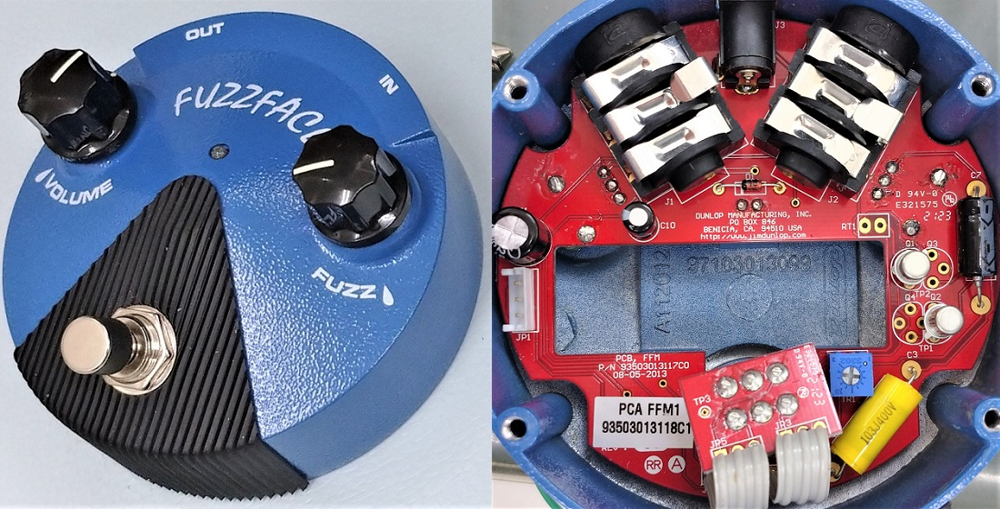
ギター音再現機を製作したことによりギター直結時のファズの音質評価がしやすくなったので、改めてファズフェイスについて勉強してみようと思います。まずは標準的な機種として、Jim Dunlop FFM1 SILICON FUZZ FACE MINIを解析することにしました。KiCadとLTspiceの回路図データ、基板画像はGitHubにあります。
BC108BのSPICEモデルは、このページのZETEX BC108 Spice modelと記載があるものを使いました。BC108データシートの測定条件 Vce=5V Ic=2mA でhFEが250になるよう、Bf=322に変更してあります。正確なモデルなのかどうかは不明ですが、概ね実測と合っているようです。
▽基板画像
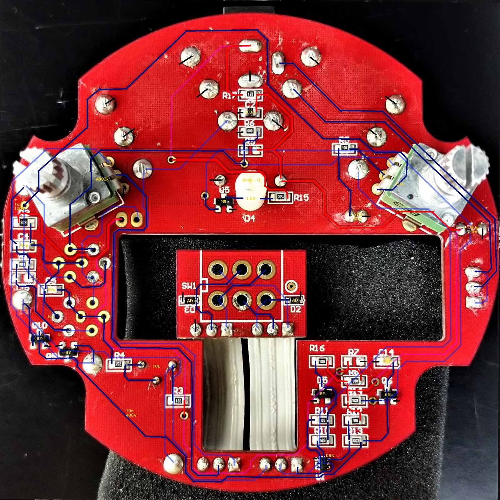
ユーザーから見える部分はスルーホール部品を使い、見えない部分に表面実装部品が並んでいます。JHF1 Jimi Hendrix Fuzz Faceでも基板裏に表面実装部品が使われており、設計者が基板の見た目にもこだわっていることがうかがえます。
▽回路図
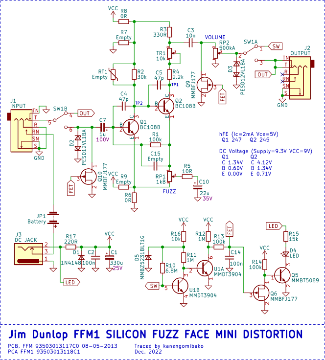
REV.A3基板の中古個体も入手したのですが、REV.C1基板の新品個体の回路図・データを掲載しています。おそらくFFM2と共用の基板で、PNPトランジスタ対応のため電源とグラウンドが入れ替えられるようになっていますが、基本的には伝統的なファズフェイスの回路です。バイパス関連部分はSuper Badass Distortionと同様の回路で、FETスイッチで入出力をグラウンドに落としてあります。主要回路の解説については下記参考ページ等をご参照ください。
・GEO - The Technology of the Fuzz Face
・ElectroSmash - Fuzz Face Analysis
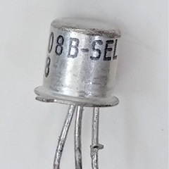
REV.C1基板のBC108Bは「-SEL」が印字されており、おそらくSELECT（選別）を意味する特注品だと思われます。REV.A3基板のBC108B（-SEL無し）のhFEは248と252で、hFEは250前後で選別されているようです。その他にも、REV.A3基板→REV.C1基板でR17：100R→220R、C1：100u→330uへと変更され、電源ノイズ対策が強化されています。
【シミュレーション】
トランジスタのエミッタ接地回路については、下記ページの図を見ると理解しやすいかと思います。
・Electrical Information - エミッタ接地回路の『特徴』や『原理』について
動作基準点となるベース電流を把握する必要があります。FFM1での直流バイアスは下図のようになります。
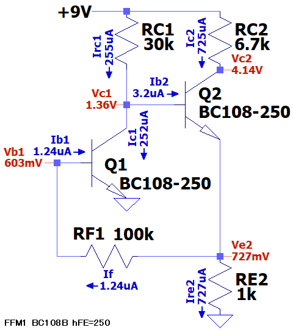
Ib1は 電源→RC1→Q2ベース-エミッタ→RF1→Q1ベース という流れで設定されています。
＜Q1＞のIc-Vce特性は下図です。交流負荷線の傾きは不明なので無理やり記入しました。
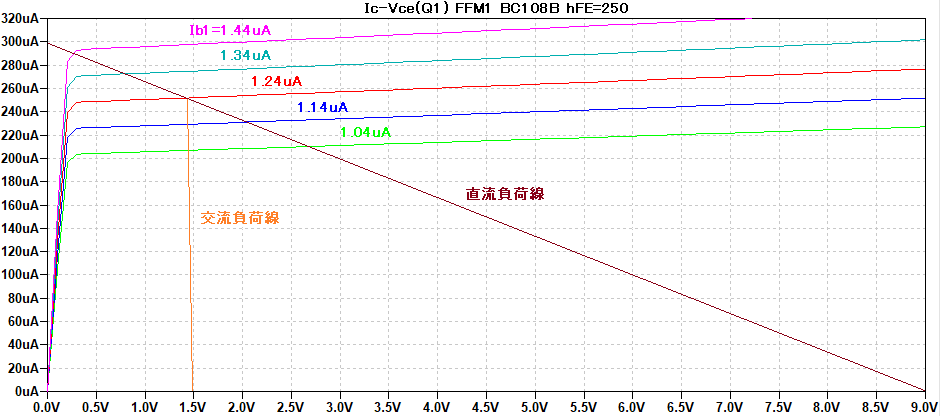
ギターからの入力信号により、Ib1が1.24uAを中心に1.04～1.44uAで変化したとすると、Ic1は210～290uAで変化します。しかしVc1は0.3～1.4Vまでしか変化しません。これは、Q1のコレクタにQ2が接続されているためです。すなわち、Q2のベース-エミッタはダイオードのように働くため、Ic1増加時はIb2がすぐに0になってIrc1が増加し、Ic1減少時はIb2が増加する動作になります（下図）。
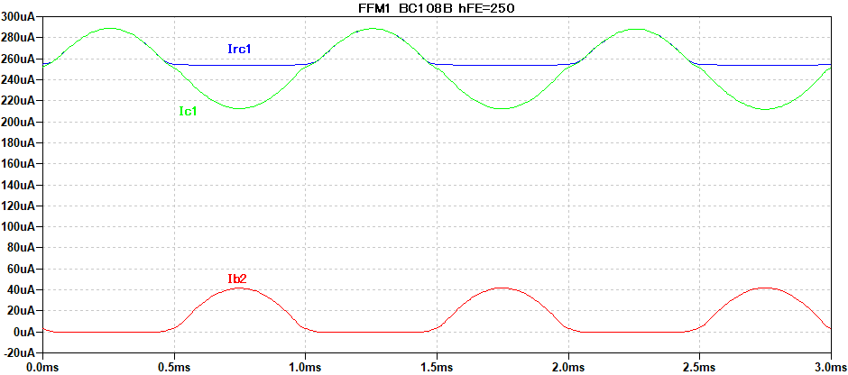
Ib2は3.2uAを中心に0～40uAで変化しており、次段の増幅に関与します。かなり偏ったクリッピングです。
＜Q2＞のIc-Vce特性は下図です。
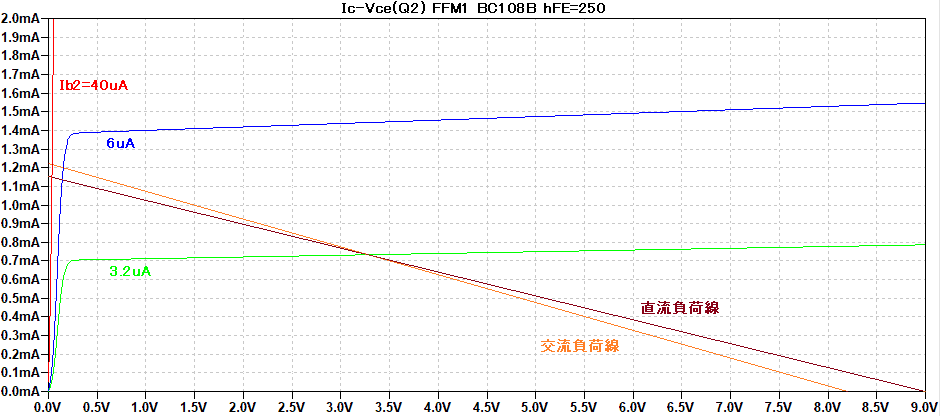
最大振幅の真ん中になるバイアス点は4.8V（Vce2=4.1V）あたりです。FFM1では低めの4.1Vなので、少し偏った位置にバイアス点が設定されているということになります。ちなみにJHF1では5.75Vという設定のようです。
【鈴鳴りについて】
ファズフェイスは、ギター直結でギターボリュームを絞ると鈴鳴り（Bell Tone）と呼ばれる煌びやかな音が出せることが知られています。一体どのような特性なのか、ギター音再現機を使って実測しました。歪まないように入力レベルをかなり下げています。
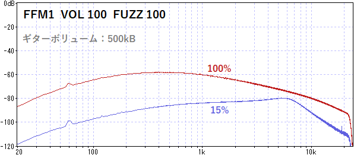
ギターボリュームを下げた時、高音域があまり下がらず残ったままの状態となっています。言い換えれば、ギターボリュームを上げると低音域を中心に増幅されるということです。これを説明するのに、一庵堂 わかりやすいFUZZ FACEの読み方というページが参考になります。このページでは、ファズフェイスの回路はオペアンプの反転増幅回路に似た動作で増幅していると解説されています（近似計算なので実際とズレはあります）。
下図のような単純な反転増幅回路に置き換えて考えてみます。
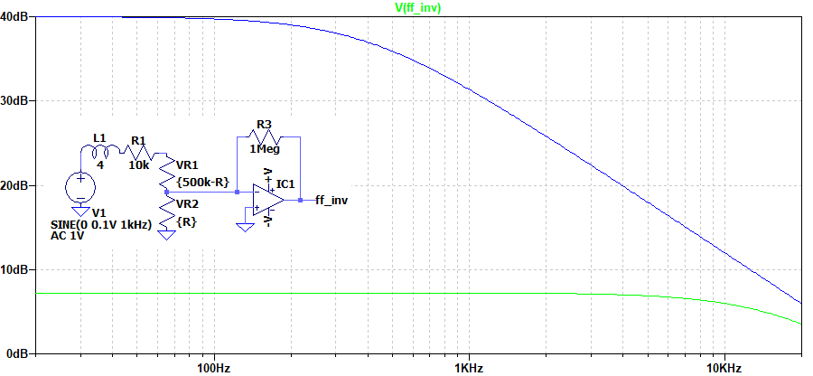
基本的には、ギターボリュームを上げるほど入力抵抗が低くなり増幅率が上がるはずです。しかしピックアップはコイルなので高い周波数は電流を流しにくく（入力抵抗が高い）、低音域側が増幅される形になります。ギターボリュームを絞ると、増幅率が低くなってフラットな特性に近くなるため、全体としては高音域が出てきたように感じるということになります。そして実際のファズフェイスでは、C10（22uF）により低音域が下がっていることや、入力レベルが低くても少し歪みが生じていることも影響し、煌びやかな音色が生み出されていると考えられます。
---2023年7月17日追記---
鈴鳴りについて、もう少し簡単に考えました。ギターのピックアップを単純なコイルとし、入力インピーダンスが低い機器に接続した状態を考えると、ローパスフィルタを形成して高音域が減少します。※入力インピーダンスが高い場合には、カットオフ周波数が高くなるためほとんどフラットな状態になります。
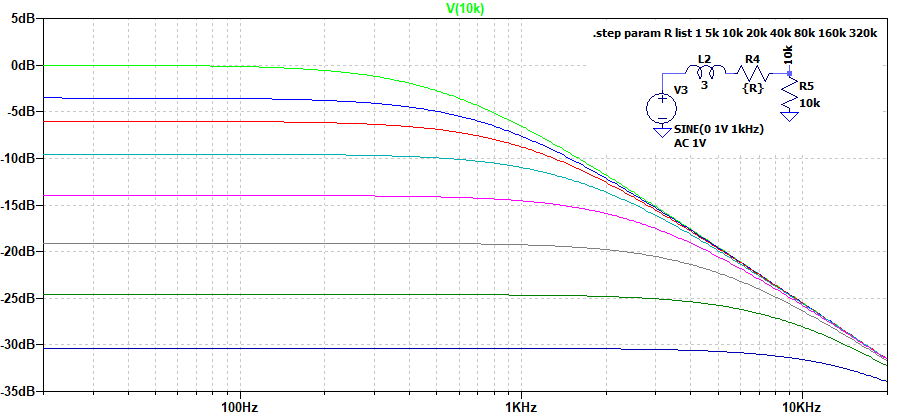
ギターボリュームを絞ると、コイルに直列に入っている抵抗値が大きくなりフラットな特性に近づいていきます。これにより相対的に高音域が出てくるように感じられるということになります。